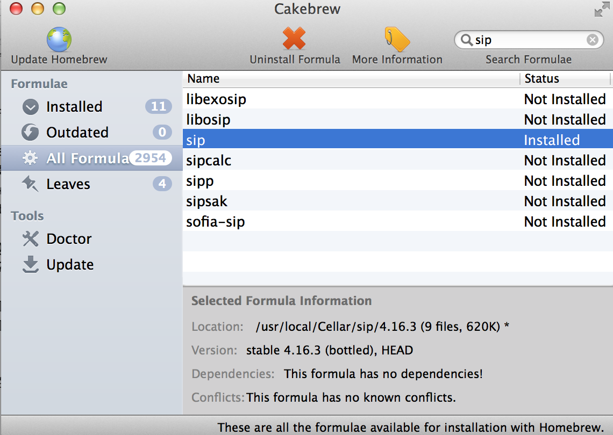
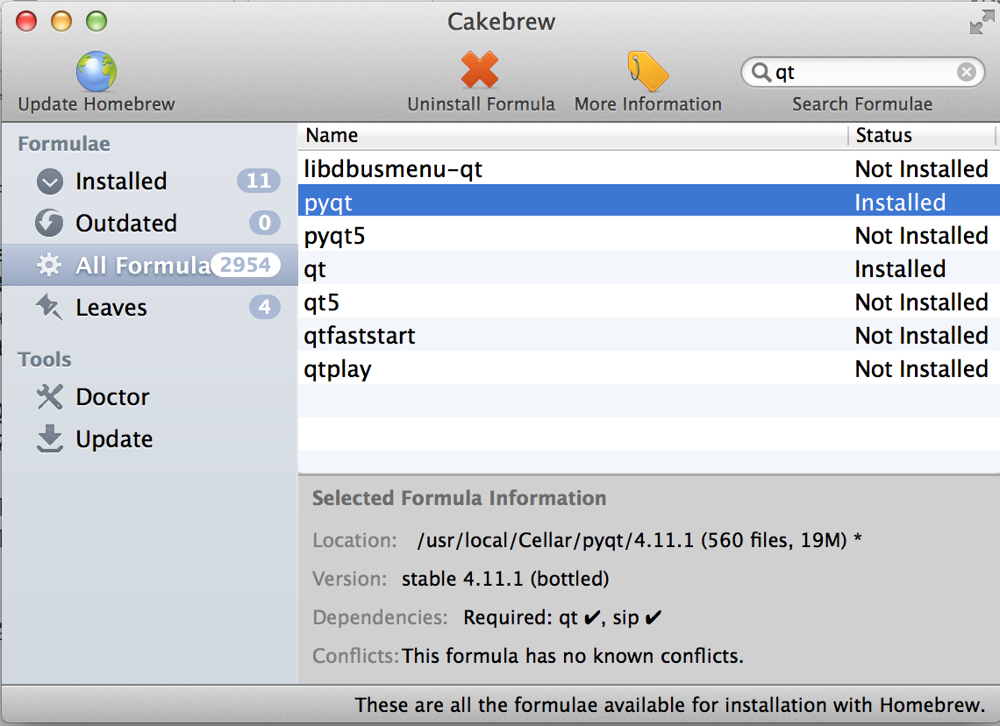
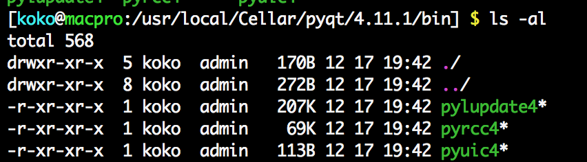

Python - 在 Mac 上安裝 PyQt 開發 GUI 視窗程式
Posted on Sat 14 February 2015 in Pelican
前言
在前一篇 Python - 在 Windows 上使用 PyQt 開發 Python 視窗程式 介紹了在 Windows 上開發 PyQt 的視窗程式，而因為本人也有在使用 Mac 所以也要筆記一下如何安裝囉。
事前安裝須知
在 Mac 上安裝 PyQt 不像在 Windows 上方便可以直接到 PyQt 官網下載整合在一起的安裝檔，必須要額外自行安裝一些工具才行，包含 :
- Qt : Qt 開發工具，因為 PyQt 是建構在 Qt 上所以需要相依函式庫
- Sip : SIP 是一個自動為 C 和 C++ 庫生成 Python 擴充功能模組的工具。為了方便開發 PyQt 用，因此 PyQt 官網也有提到需要先安裝 SIP
因此我們需要先安裝完上述兩個套件後才能安裝 PyQt。
另外，PyQt 中目前分成 PyQt4 與 PyQt5，對應到的是 Qt4 與 Qt5 兩個版本；而 Python 的版本上目前分成 2.7 與 3.4 兩種，2.7 主要是可以在 Qt4 上執行，3.4 則是對應 Qt5。
所以在版本的考量上我們可以選擇：
- 選擇 Python 2.7 : 下載 Qt4 與 PyQt4
- 選擇 Python 3.4 : 下載 Qt5 與 PyQt5
了解後，我們便準備開始在 Mac 上安裝吧。
而此文章會使用架構在 Homebrew 上的 Cakebrew 套件來做方便我們以圖形化的軟體瀏覽與安裝套件，當然如果覺得沒有 GUI 呈現的 Cakebrew 也沒差，直接安裝 Homebrew 在下指令即可。
在本篇文章中，選擇安裝 Python2.7.9，所以在 PyQt 的版本選擇 PyQt4，而且目前 Resource 也是 PyQt4 相對好找。
安裝流程
1. 安裝 Homebrew
到 Homebrew 官網複製下載的代碼，然後開啟 Terminal 輸入以這段下載的代碼 :
ruby -e "$(curl -fsSL https://raw.githubusercontent.com/Homebrew/install/master/install)"
由於 Mac 內建 Ruby 的指令，所以可以直接執行。
2. 安裝 Cakebrew
到 Cakebrew 官網 下載 Cakebrew 並安裝。安裝好後接著如下圖，搜尋 Qt 並選擇 qt，預設是下載 qt4.8.6

透過 Cakebrew 下載的套件會統一放在 /usr/local/Cellar/ 這個路徑的目錄下做方便管理，如這邊 qt 則是安置在 /usr/local/Cellar/qt/
3. 安裝 SIP
如下圖，安裝 SIP :

4. 最後安裝 PyQt
選擇 pyqt 下載 pyqt4 的版本 :

一樣可以到 /usr/local/Cellar/ 下尋找有無 pyqt 的目錄，並且 /usr/local/Cellar/pyqt/4.11.1/bin 中是否有 pyuic4 ( 此時的版本剛好是 4.11.1 )

透過 Qt4 的 QtDesigner 設計視窗程式的 UI 介面
在我們安裝好 Qt4 後，可以在路徑 /usr/local/Cellar/qt/4.8.6 找到 QtDesigner.app 這個軟體。

如同 QtDesigner.app 的功用，藉由 QtDesigner.app 協助我們直接設計視窗程式的 UI 介面，如下：
或是若已經有安裝 Qt Creator 開發環境，也可以直接使用裡面的 QtDesigner 來設計 UI 介面並保存該檔案。
轉換 Qt Designer UI 檔案為 .py 擋
pyuic4 協助我們把透過 Qt Creator 或是 QtDesigner.app 產生好的 UI 元件定義檔案，轉換成 Python 的元件定義檔案。 因此我們可以透過 PyQt 提供的指令 pyuic4 來做轉產生 .py 檔案作為 Module。
指令如下：
$> pyuic4 <yourUI.ui> -o <yourUI.py>
$> pyuic4 pyqtminwindow.ui -o pyqtminwindow.py # 範例
藉由把上述的 pyqtminwindow.ui 轉換為 pyqtminwindow.py 檔案後，再把這 Python 的 UI 元件定義檔案，以 import 的方式提供給主程式使用 :
import sys
import pyqtminwindow
from pyqtminwindow import Ui_MainWindow
from PyQt4.QtGui import QMainWindow
class MainWindow(QMainWindow, Ui_MainWindow):
def __init__(self, parent=None):
super(MainWindow, self).__init__(parent)
self.setupUi(self)
if __name__ == "__main__":
app = pyqtminwindow.QtGui.QApplication(sys.argv)
window = MainWindow()
window.show()
sys.exit(app.exec_())